Chapter 3 Spatial Analysis in R
Spatial data has become an essential component of modern soil science.
All steps of Digital Soil Mapping involve to work with spatial datasets.
This session introduces the fundamental concepts and tools needed to process, analyze, and visualize spatial data within R, using the most complete spatial packages available:
{sf}for vector data (points, lines, polygons), and
{terra}for raster data (continuous surfaces, grids, remote sensing products).
The tutorial includes concepts as vector and raster spatial data coordinate reference systems (CRS), spatial data operators for vector (buffer, intersection, union, spatial join) and raster (crop, mask, resample, raster algebra) data and translate raster informatio into vector structures such as soil sampling locations.
3.1 Spatial Data Concepts
Spatial data refers to any information that includes a location on Earth, usually represented by coordinates. Unlike regular tabular data, spatial data allows us to study how patterns, processes, and relationships change across space.
In the case of soils, following Jenny’s equation of soil-forming factors (Jenny, 1941 a), soil properties are a function of climate, organisms, relief, parent material, and time, leading to non-random spatial distributions:
\[\begin{aligned} S= f(cl, o, r, p, t,\ldots ). \end{aligned}\]where ‘S’ represents soil formation, ‘cl’ is climate, ‘o’ is organisms, ‘r’ is relief, ‘p’ is the parent material and ‘t’ accounts for the time that took place to develop the soil profile.
These relationships have traditionally been used by soil scientists to infer the distribution of different soil types in conventional soil mapping activities. Modern frameworks now use machine learning approaches (e.g., Self-Organizing Maps) to help ‘disentangle’ these complex relationships, transforming qualitative soil-forming factors into quantitative, high-resolution predictive models (Prieto-Castrillo et al., 2023).
This deterministic perspective—linking environmental variation to soil variation—forms the basis of Digital Soil Mapping. In practice, soil properties measured at point locations (vector data) are related to environmental characteristics represented as raster covariates, and these relationships are used to fit statistical or machine learning models which can predict soil properties continuously across space using the available raster-based environmental information.
3.1.1 Spatial Data Types: Vector vs Raster Data
Spatial data is commonly stored in two major formats: vector and raster (Fig. 3.1) .
Vector data (points, lines, polygons) for discrete objects.
Raster data (regular grids) for continuous surfaces.

Figure 3.1: Vector vs raster data representations
Vector data represent features as geometries (POINT, LINE, POLYGON) linked to an attribute table. They are ideal for representing discrete spatial objects such as soil sampling points, field boundaries, or landscape units.
Table 1. Example of layer types and their associated geometry
| Layer Type | Geometry |
|---|---|
| Soil profile locations | POINT |
| Soil sampling locations | POINT |
| Rivers, roads | LINE |
| Fields of sampling plots | POLYGON |
| Farms / Administrative boundaries | POLYGON |
| Land units, physiographic regions | POLYGON |
Raster data represents the landscape as a grid of equally sized cells, each storing a numeric value representing an area defined by the spatial resolution of the raster layer. Raster layers are ideal for continuous spatial phenomena such as soil properties in Digital Soil Mapping .
Examples of raster layers include:
Digital Elevation Models (DEM)
Climate variables (rainfall, temperature)
Remote sensing indices (NDVI, Sentinel-2 bands)
Soil property predictions (SOC, pH, clay%)
Moisture or vegetation products from satellites
Both data structures are complementary, and both are required for the creation of digital soil maps.
3.1.2 Coordinate Reference Systems (CRS) and Projections
A Coordinate Reference System (CRS) defines how spatial coordinates relate to positions on Earth. Because Earth is curved, and maps are flat, different CRS systems use different mathematical models to translate the curved space to a planar surface.
The choice of CRS has a major impact on the accuracy of distances, areas, buffer operations, overlays between layers, and spatial modelling outputs.
All spatial objects must should include a CRS as part of their metadata. Many common spatial errors come from mixing layers with different or missing CRS.
3.1.2.1 Geographic vs projected coordinate systems.
In Geographic Coordinate Systems (GCS), coordinates are expressed in latitude and longitude with units in degrees (°) (a common example is EPSG:4326 (WGS84)).
Geographic Coordinate Systems are suitable for storing global data, but they are not appropriate for distance, area, or buffering calculations because degrees are angular units and the ground distance represented by one degree varies with latitude (Fig. 3.2). This variation leads to distortions in distance and area calculations.

Figure 3.2: Distance distortion in GCS, where the physical distance of one degree varies by latitude
To overcome these limitations, Projected Coordinate Systems (PCS) are designed to reduce distortion over a specific region by transforming the curved surface of the Earth onto a flat plane. In a PCS, coordinates are expressed in linear units (usually meters), which makes them suitable for accurate geometric operations such as distance, area, and buffering. Typical examples include UTM zones (e.g., EPSG:32614, EPSG:32632), national grid systems, and local projections optimized for area-specific precision.
To find and compare appropriate CRS options for your data, you can explore available CRS definitions using https://epsg.io.
3.2 Spatial Packages in R: {sf} and {terra}
3.2.1 Installing and Loading Spatial Packages
{sf} and {terra} packages are available at CRAN and can be installed using the known install.packages() function.
install.packages("sf")
install.packages("terra")Once the packages are installed, you must load them in your R session:
library(sf)
library(terra)3.3 Working with Vector Data using {sf}
The {sf} package implements the Simple Features standard for spatial vector data in R. A simple feature is a geometric object (point, line, polygon, etc.) linked to one or more attributes (e.g., soil type, pH, land use).
In practice, an sf object is essentially a data frame that includes a geometry column and an associated coordinate system. Thus, it combines:
- Attributes – ordinary columns (e.g., plot ID, pH, SOC, soil type) just like in a regular data frame.
- Geometry column – typically named
geomorgeometry, storing coordinates and geometry type.
- CRS – information about the coordinate system used (e.g., WGS84, UTM), as part of the object.
3.3.1 Importing and Exporting Vector Data
Vector data represent discrete geographic features such as soil profile locations, field plots, administrative boundaries, roads, or land units.
Vector data is typically stored in formats such as Shapefile, GeoPackage, GeoJSON, or other OGC-compliant files, but can also be stored in plain files with associated coordinates such as CSV files.
3.3.1.1 Creating spatial vector objects from CSV files.
Spatial point layers in R can be created directly from regular data frames using the {sf} package.
The function st_as_sf() converts a data frame into a spatial (vector) object, as long as the data frame contains coordinate columns (e.g., longitude and latitude or projected X/Y coordinates).
To perform this conversion, users must specify the columns containing the coordinates. Even if not mandatory, it is highly recommended also to set the coordinate reference system:
Since importing a .csv file in R typically produces a data frame, the workflow is essentially the same as in the previous example. Once the table is loaded and includes coordinate columns (e.g., X and Y in longitude/latitude), it can be converted to an sf object using st_as_sf() by specifying the coordinate columns and the CRS.
# Import the previously standardized dataset for 0-30 cm depth
output_dir <-"03_outputs/module1/"
kdata <- read.csv (paste0(output_dir,"KSSL_DSM_0-30.csv"))
# Convert to sf: create POINT geometry from lon/lat, set CRS = WGS84 (EPSG:4326)
soil_sf <- st_as_sf(kdata, coords = c("lon", "lat"), crs = 4326)
# Print object geometry
soil_sf$geometry
# Print CRS details
st_crs(soil_sf)The Coordinate Reference System (CRS) has been provided as an argument within the st_as_sf() function. Users can visualize CRS of sf objects with st_crs(). the sf object can be transformed to shapefile with st_write.
3.3.1.2 Importing Shapefiles
Shapefiles can be directly imported into R using the st_read() function. You can also import most other vector formats with the same command, because {sf} automatically detects the file type.
The following chunk imports the soil sampling locations from the cleaned KSSL dataset. This layer represents individual soil pits or auger locations, with coordinates and measured properties stored in the attribute table. The chunk also plots pH values for a quick visual check of the spatial distribution of the data.
# Read the previously created shapefile containing soil profile points
soil_sf <- st_read(paste0(output_dir,"soil_profiles.shp"))
# Inspect the first rows
head(soil_sf)
# Quick visualization
plot(soil_sf["pH"], pch = 16, cex = 0.6, key.pos = 1) # key.pos controls legend position## Simple feature collection with 6 features and 8 fields
## Geometry type: POINT
## Dimension: XY
## Bounding box: xmin: -101.9787 ymin: 38.46796 xmax: -101.7259 ymax: 39.27917
## Geodetic CRS: WGS 84
## ProfID top bottom Clay Silt Sand SOC pH geometry
## 1 PROF0003 0 30 20.46297 55.9 23.6 1.5744 8.13 POINT (-101.9787 39.06988)
## 2 PROF0004 0 30 22.83169 57.9 19.3 1.3520 6.12 POINT (-101.7832 38.46796)
## 3 PROF0005 0 30 26.41016 58.4 15.2 1.5100 7.25 POINT (-101.7813 38.4703)
## 4 PROF0006 0 30 19.79542 54.9 25.3 1.6500 6.75 POINT (-101.7787 38.47096)
## 5 PROF0007 0 30 25.51856 54.2 20.3 1.6972 7.21 POINT (-101.7467 38.5798)
## 6 PROF0008 0 30 32.35233 57.7 9.9 1.4412 7.84 POINT (-101.7259 39.27917)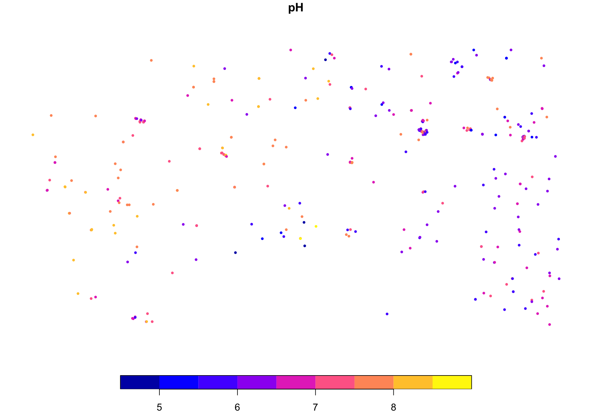
3.3.2 Setting and Reprojecting CRS for vector data
It is good practice to always confirm the Coordinate Reference System (CRS) of your spatial data. If the CRS is missing or incorrectly specified, spatial operations such as buffering, distance, and overlay may fail or return misleading results.
As shown previously, the CRS can be defined when creating an sf object (e.g., with st_as_sf()). You can inspect the CRS of an sf object with st_crs(). If the CRS is missing, you can assign it with st_set_crs(). To reproject the data into a different CRS (i.e., change the coordinate values to a new reference system), use st_transform().
Example: Converting the sf object soil_sf from Geographic WGS84 (EPSG:4326) to WGS 84 / Pseudo-Mercator (EPSG:3857), a projection commonly used for web mapping.
sf_3857 <- st_transform(soil_sf, 3857)
# Preview of the projected object
sf_3857## Simple feature collection with 411 features and 8 fields
## Geometry type: POINT
## Dimension: XY
## Bounding box: xmin: -11352220 ymin: 4441494 xmax: -10543030 ymax: 4864255
## Projected CRS: WGS 84 / Pseudo-Mercator
## First 10 features:
## ProfID top bottom Clay Silt Sand SOC pH geometry
## 1 PROF0003 0 30 20.46297 55.9 23.6 1.5744 8.13 POINT (-11352221 4731687)
## 2 PROF0004 0 30 22.83169 57.9 19.3 1.3520 6.12 POINT (-11330456 4645745)
## 3 PROF0005 0 30 26.41016 58.4 15.2 1.5100 7.25 POINT (-11330245 4646078)
## 4 PROF0006 0 30 19.79542 54.9 25.3 1.6500 6.75 POINT (-11329955 4646172)
## 5 PROF0007 0 30 25.51856 54.2 20.3 1.6972 7.21 POINT (-11326387 4661659)
## 6 PROF0008 0 30 32.35233 57.7 9.9 1.4412 7.84 POINT (-11324071 4761739)
## 7 PROF0009 0 30 33.48740 57.5 8.7 1.6008 7.23 POINT (-11318362 4688793)
## 8 PROF0010 0 30 26.45364 63.0 10.5 1.6600 6.20 POINT (-11318291 4688790)
## 9 PROF0011 0 30 34.20759 56.5 9.3 1.0000 6.60 POINT (-11318271 4688736)
## 10 PROF0012 0 30 35.03661 59.2 5.8 2.5156 7.72 POINT (-11317519 4697647)3.3.3 Inspecting and manipulating {sf} Object
Because sf objects inherit from the data.frame class, you can explore an sf object with the same tools as data frames (class(),str(), summary()), plus a few {sf} helpers (st_geometry_type()).
# Check structure
str(soil_sf)## Classes 'sf' and 'data.frame': 411 obs. of 9 variables:
## $ ProfID : chr "PROF0003" "PROF0004" "PROF0005" "PROF0006" ...
## $ top : int 0 0 0 0 0 0 0 0 0 0 ...
## $ bottom : int 30 30 30 30 30 30 30 30 30 30 ...
## $ Clay : num 20.5 22.8 26.4 19.8 25.5 ...
## $ Silt : num 55.9 57.9 58.4 54.9 54.2 57.7 57.5 63 56.5 59.2 ...
## $ Sand : num 23.6 19.3 15.2 25.3 20.3 9.9 8.7 10.5 9.3 5.8 ...
## $ SOC : num 1.57 1.35 1.51 1.65 1.7 ...
## $ pH : num 8.13 6.12 7.25 6.75 7.21 7.84 7.23 6.2 6.6 7.72 ...
## $ geometry:sfc_POINT of length 411; first list element: 'XY' num -102 39.1
## - attr(*, "sf_column")= chr "geometry"
## - attr(*, "agr")= Factor w/ 3 levels "constant","aggregate",..: NA NA NA NA NA NA NA NA
## ..- attr(*, "names")= chr [1:8] "ProfID" "top" "bottom" "Clay" ...# Summary of attributes + geometry
summary(soil_sf)## ProfID top bottom Clay Silt
## Length:411 Min. :0 Min. :30 Min. : 2.912 Min. : 3.60
## Class :character 1st Qu.:0 1st Qu.:30 1st Qu.:23.081 1st Qu.:48.85
## Mode :character Median :0 Median :30 Median :29.824 Median :55.80
## Mean :0 Mean :30 Mean :30.146 Mean :53.24
## 3rd Qu.:0 3rd Qu.:30 3rd Qu.:37.148 3rd Qu.:61.80
## Max. :0 Max. :30 Max. :65.460 Max. :81.40
## Sand SOC pH geometry
## Min. : 0.30 Min. :0.120 Min. :4.500 POINT :411
## 1st Qu.: 5.00 1st Qu.:1.104 1st Qu.:6.195 epsg:4326 : 0
## Median : 9.80 Median :1.600 Median :6.905 +proj=long...: 0
## Mean :16.59 Mean :1.801 Mean :6.881
## 3rd Qu.:19.30 3rd Qu.:2.268 3rd Qu.:7.660
## Max. :92.50 Max. :7.317 Max. :8.830# Extract the geometry column
st_geometry(soil_sf)## Geometry set for 411 features
## Geometry type: POINT
## Dimension: XY
## Bounding box: xmin: -101.9787 ymin: 37.01713 xmax: -94.70964 ymax: 39.98839
## Geodetic CRS: WGS 84
## First 5 geometries:# Check the geometry type. Use head to avoid long printing
head(st_geometry_type(soil_sf))## [1] POINT POINT POINT POINT POINT POINT
## 18 Levels: GEOMETRY POINT LINESTRING POLYGON MULTIPOINT ... TRIANGLE# Check the CRS:
st_crs(soil_sf)## Coordinate Reference System:
## User input: WGS 84
## wkt:
## GEOGCRS["WGS 84",
## DATUM["World Geodetic System 1984",
## ELLIPSOID["WGS 84",6378137,298.257223563,
## LENGTHUNIT["metre",1]]],
## PRIMEM["Greenwich",0,
## ANGLEUNIT["degree",0.0174532925199433]],
## CS[ellipsoidal,2],
## AXIS["latitude",north,
## ORDER[1],
## ANGLEUNIT["degree",0.0174532925199433]],
## AXIS["longitude",east,
## ORDER[2],
## ANGLEUNIT["degree",0.0174532925199433]],
## ID["EPSG",4326]]# Check the spatial extent of the object:
st_bbox(soil_sf)## xmin ymin xmax ymax
## -101.97873 37.01713 -94.70964 39.98839{sf} objects can be manipulated in the same way as standard data frames while retaining all spatial information.
Base R and {dplyr} verbs such as filter(), select(), mutate(), can be directly applied on sf objects .
# Subset sf rows and columns using the pipping (%>%) operator with {dplyr}
alkaline <- soil_sf %>%
filter(pH > 7.4) %>%
select(ProfID, pH) %>%
mutate(alkaline = TRUE)
# Preview alkaline data
alkaline## Simple feature collection with 128 features and 3 fields
## Geometry type: POINT
## Dimension: XY
## Bounding box: xmin: -101.9787 ymin: 37.04897 xmax: -94.87952 ymax: 39.94233
## Geodetic CRS: WGS 84
## First 10 features:
## ProfID pH geometry alkaline
## 1 PROF0003 8.13 POINT (-101.9787 39.06988) TRUE
## 2 PROF0008 7.84 POINT (-101.7259 39.27917) TRUE
## 3 PROF0012 7.72 POINT (-101.667 38.83208) TRUE
## 4 PROF0013 8.29 POINT (-101.536 38.50828) TRUE
## 5 PROF0014 8.28 POINT (-101.534 38.50785) TRUE
## 6 PROF0015 8.29 POINT (-101.5333 38.50486) TRUE
## 7 PROF0016 8.22 POINT (-101.4776 38.22087) TRUE
## 8 PROF0017 8.07 POINT (-101.4745 38.2207) TRUE
## 9 PROF0018 8.00 POINT (-101.4703 38.22167) TRUE
## 10 PROF0019 7.85 POINT (-101.4447 38.57471) TRUE3.3.4 Geometry Operations
Geometry operations help you create new geometries (e.g., buffers) and combine layers (e.g., clip points to a boundary). In soil science, they are often used to define sampling influence areas, restrict data to an administrative unit, or summarize results by region.
For distance and area-based operations (buffers, distances, areas), work in a Projected CRS (units in metres), not in lon/lat degrees. Before any geometry operation, make sure both layers are in the same CRS.
3.3.4.1 Buffering Plots (Influence Area)
Buffers are regions created at a fixed distance around geometries (points, lines, or polygons).
In soil applications, buffers can represent:
- The influence area of a contaminating facility (polygon geometry).
- Proximity zones around rivers or roads (line geometry).
- Buffer zones around soil sampling points to define their spatial influence (point geometry).
The function st_buffer() is used for this. If the input dataset is in a Geographic Coordinate System (longitude/latitude in degrees), you should first transform it to a Projected Coordinate System (units in metres) before buffering.
# Original KSSL data is in WGS84 EPSG:4326 geographic coordinates(lon/lat)
# Transform the subset of alkaline soils to NAD83 / UTM 14N (EPSG: 26914)
alkaline_utm <- st_transform(alkaline, crs = 26914) # UTM 14N, distance in metres
# Create a 1 km buffer around each plot
plots_buffer_1k <- st_buffer(alkaline_utm, dist = 1000)
# Plot buffers (first 3 plots) and then overlay the same points
plot(st_geometry(plots_buffer_1k[1:3, ]),
col = rgb(0, 0, 1, 0.3), border = "blue",
main = "Plot of first 3 alkaline soils with 1 km buffers")
# Overlay the original sample locations
plot(st_geometry(alkaline_utm[1:3, ]),
add = TRUE, pch = 16, col = "red")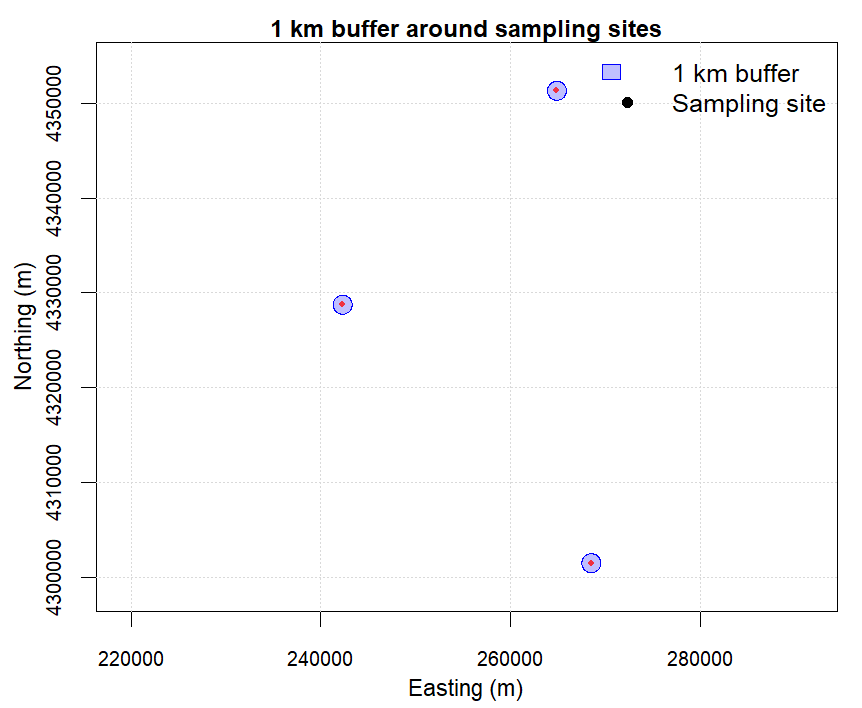
Figure 3.3: 1 km buffer around sampling points
3.3.4.2 Clip Soil Data to Defined Boundaries
In soil data management workflows, it is common to restrict analyses to a defined study area (e.g., a county, district, watershed, or project boundary). This helps ensure that summaries, maps, and models are computed only for the relevant spatial extent.
Two core operations are used repeatedly in Soil Data Management and Digital Soil Mapping:
Clip / subset by boundary (
st_intersection()): keeps only the features (or parts of features) that fall inside a target boundary.Dissolve boundaries (
st_union()): merges multiple polygons into a single boundary by removing internal borders.
Use clipping to restrict soil profiles, samples, or observations to a target area before analysis or reporting.
Use dissolving to build a clean study boundary for masking, cropping, mapping, or aggregating results at a higher level.
Example 1: Clip sampling points to one administrative unit
In this example, we clip KSSL sampling points to Riley County. The steps are:
Read the administrative boundaries layer.
Transform it to the CRS of the soil points (so layers align).
Select the target polygon (Riley).
Clip the soil points to that polygon.
# Read administrative boundaries (example file)
admin <- st_read("01_data/module1/shapes/Tiger_2020_Counties.shp")
# Ensure both layers share the same CRS
admin <- st_transform(admin, st_crs(soil_sf))
# Example: select one unit (replace with your column/value)
study_area <- admin[admin$NAME == "Riley", ]
# Keep only points inside the study area
soil_clip <- st_intersection(soil_sf, study_area)
# Plot result
plot(st_geometry(study_area), col = NA, border = "black", main="Sampled soils in Riley County", cex.main = 1 )
plot(st_geometry(soil_clip), add = TRUE, pch = 16, col = "red", cex = 0.6)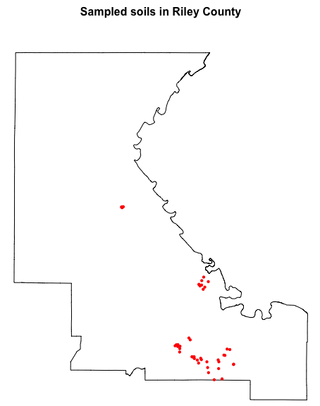
Figure 3.4: Sampled soils in Riley County
In this case, soil_clip preserves all attributes from the original sampling dataset (soil_sf) and includes the attributes of the administrative polygon admin at each point.
Example 2: Dissolve polygons to create a single study region boundary
Dissolving is useful when you want a single boundary for a larger study region. For example, you may want to combine all counties into a single Kansas state outline (or merge multiple polygons representing a project area).
st_union() merges all polygons into one geometry and removes internal borders.
# Dissolve all counties into one Kansas boundary
admin_dissolved <- st_union(admin)
# Plot comparison: before vs after dissolve
# Adjust graphics settings to 1 row x 2 columns layout with tight margins
op <- par(
mfrow = c(1, 2),
mar = c(0.5, 0.5, 0.1, 0.5), # very small top margin
xaxs = "i", yaxs = "i"
)
plot(st_geometry(admin[1]),
col = NA, border = "black",
axes = FALSE, asp = 1)
title("Before dissolve", line = -0.6, cex.main = 0.95)
plot(st_geometry(admin_dissolved),
col = NA, border = "black",
axes = FALSE, asp = 1)
title("After dissolve", line = -0.6, cex.main = 0.95)
# restore graphics settings
par(op)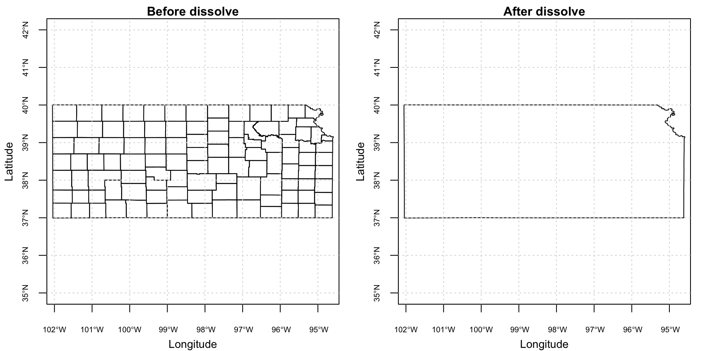
Figure 3.5: Dissolving polygons on Kansas County vector data
3.3.4.3 Spatial Relationships and Joins
Spatial relationships help answer questions about how spatial features relate to one another (e.g., whether a point falls inside a polygon, or how far two features are apart).
Spatial predicates (return TRUE/FALSE relationships):
st_intersects()(touch/overlap)st_within()(inside)st_distance()(distance between features)
Spatial joins attach attributes from one layer to another:
st_join()(e.g., assign each soil profile to an administrative unit)
Example: assign each sampling point to an administrative polygon.
# Ensure both layers share the same CRS
alkaline <- st_transform(alkaline, st_crs(admin))
# Join admin attributes to points (points inherit polygon attributes)
alkaline_with_admin <- st_join(alkaline, admin, join = st_within)
# Preview result
head(alkaline_with_admin)## Simple feature collection with 6 features and 20 fields
## Geometry type: POINT
## Dimension: XY
## Bounding box: xmin: -101.9787 ymin: 38.50486 xmax: -101.5333 ymax: 39.27917
## Geodetic CRS: WGS 84
## ProfID pH alkaline STATEFP COUNTYFP COUNTYNS GEOID NAME NAMELSAD
## 1 PROF0003 8.13 TRUE 20 199 00485060 20199 Wallace Wallace County
## 2 PROF0008 7.84 TRUE 20 181 00485053 20181 Sherman Sherman County
## 3 PROF0012 7.72 TRUE 20 199 00485060 20199 Wallace Wallace County
## 4 PROF0013 8.29 TRUE 20 203 00485062 20203 Wichita Wichita County
## 5 PROF0014 8.28 TRUE 20 203 00485062 20203 Wichita Wichita County
## 6 PROF0015 8.29 TRUE 20 203 00485062 20203 Wichita Wichita County
## LSAD CLASSFP MTFCC CSAFP CBSAFP METDIVFP FUNCSTAT AWATER INTPTLAT
## 1 06 H1 G4020 <NA> <NA> <NA> A 140936 +38.9266259
## 2 06 H1 G4020 <NA> <NA> <NA> A 548248 +39.3513521
## 3 06 H1 G4020 <NA> <NA> <NA> A 140936 +38.9266259
## 4 06 H1 G4020 <NA> <NA> <NA> A 61987 +38.4819222
## 5 06 H1 G4020 <NA> <NA> <NA> A 61987 +38.4819222
## 6 06 H1 G4020 <NA> <NA> <NA> A 61987 +38.4819222
## INTPTLON GlobalID geometry
## 1 -101.7711031 5d2c40a3-7c2d-4f48-879b-11e53b1bc366 POINT (-101.9787 39.06988)
## 2 -101.7198590 111d187f-9907-4a48-8678-a1bed6840eb9 POINT (-101.7259 39.27917)
## 3 -101.7711031 5d2c40a3-7c2d-4f48-879b-11e53b1bc366 POINT (-101.667 38.83208)
## 4 -101.3474341 c1ad0367-fe83-4ee2-91fb-256e33e36857 POINT (-101.536 38.50828)
## 5 -101.3474341 c1ad0367-fe83-4ee2-91fb-256e33e36857 POINT (-101.534 38.50785)
## 6 -101.3474341 c1ad0367-fe83-4ee2-91fb-256e33e36857 POINT (-101.5333 38.50486)3.3.5 Visualizing {sf} Objects
As shown previously, {sf} objects can be quickly visualized using the base R plot() function. This is convenient for fast checks (e.g., verifying geometry and extent), but it offers limited control over plot appearance and legend design.
In contrast, {ggplot2} provides a consistent ‘grammar of graphics’ that makes it easier to produce publication-ready maps. Key benefits include:
Full control of aesthetics (colors, symbol size, line width, transparency) and clear legends.
High-quality themes and consistent styling across figures (useful in reports and publications).
Easy layering of multiple spatial objects (points, polygons, buffers, rasters—when combined with other tools).
Faceting to compare maps by groups (e.g., land use class, sampling campaign, depth interval).
In {ggplot2}, spatial geometries are plotted with geom_sf().
library(ggplot2)
ggplot(data = soil_sf) +
geom_sf(aes(color = pH), size = 2) +
scale_color_viridis_c() +
theme_minimal() +
labs(
title = "Soil sampling sites – pH",
color = "pH"
)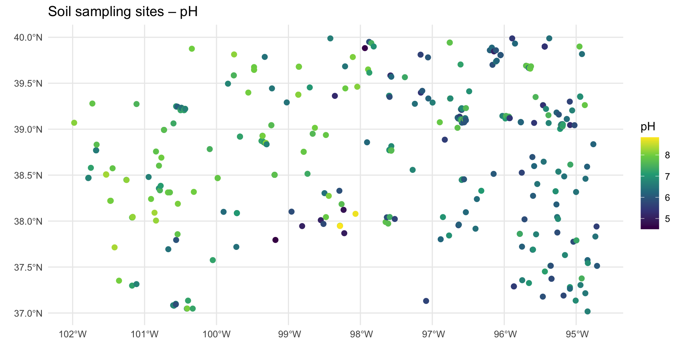
Figure 3.6: Visualization of pH values with ggplot2
The possibilities for visualization with {ggplot2} are extensive. For more examples and options, see the {ggplot2} documentation and the {sf} vignettes on plotting with geom_sf().
3.4 Working with Raster Data using {terra}
The {terra} package is the main framework for working with raster spatial data in R. A raster represents space as a regular grid of cells, where each cell stores a value (e.g., elevation, land cover class, rainfall, SOC prediction). Raster layers are widely used in Digital Soil Mapping both as covariates (environmental predictors) and as model outputs (predicted soil properties).
In practice, a terra::SpatRaster object combines:
Cell values: the data stored in the grid cells (continuous values like temperature, or categorical values like land cover).
Spatial geometry: the grid definition given by the extent (spatial coverage) and resolution (cell size).
CRS: the coordinate reference system used (e.g., WGS84, UTM).
Layers: a raster can have one layer (e.g., DEM, SOC) or multiple layers (a covariate stack).
3.4.1 Preparing Covariates for Sampling Design and Digital Soil Mapping
The workflows presented in this tutorial use environmental covariates as proxies to describe the spatial variation of soil properties. These covariates support two key steps:
Sampling design: covariates are used to identify environmental clusters that should be sampled, helping maximize the representation of soil variability while optimizing sampling effort.
Digital Soil Mapping: soil properties measured at known point locations (vector data) are related to environmental characteristics (raster covariates) to train statistical or machine learning models that predict soil properties continuously across space.
The preparation of covariates is a time-consuming task. Therefore this tutorial uses a pre-compiled set of environmental covariates to fulfil these tasks. It assembles five categories of environmental covariates cloud-optimized GeoTIFF files.
Climate data is sourced from two complementary products.
CHELSA (Climatologies at High resolution for the Earth’s Land Surface Areas) provides long-term bioclimatic variables including mean annual temperature (bio1), annual precipitation (bio12), and extreme temperature and precipitation metrics (bio5, bio6, bio13, bio14, bio16, bio17), alongside potential evapotranspiration computed using the Penman-Monteith method and surface wind statistics.
TerraClimate contributes monthly time series of maximum and minimum temperature, precipitation, and potential evapotranspiration spanning 1981 to the present, which are exported as multi-band images for subsequent temporal aggregation in R.
Terrain data is derived from the USGS SRTM 30 m Digital Elevation Model, from which slope, aspect, Topographic Position Index (TPI), and hillshade are computed on-the-fly within GEE. Geomorphological landform classification at 90 m resolution is obtained from the Geomorpho90m dataset. Additionally, pre-computed terrain derivatives at 250 m resolution (elevation, slope, curvature, TPI, TWI) are loaded from the FAO GSP shared GEE asset library hosted at projects/digital-soil-mapping-gsp-fao.
Vegetation and soil indices are computed from Sentinel-2 Surface Reflectance imagery (Copernicus/S2_SR_HARMONIZED), filtered to scenes with less than 10% cloud cover and cloud-masked using the QA60 quality band. The script computes the Normalized Difference Vegetation Index (NDVI), Enhanced Vegetation Index (EVI), Normalized Difference Bareness and Soil Index (NDBSI), Redness Index, Brightness Index, NBR+, and the Visible-Near-Short-wave Infrared Index (VNSIR). Seasonal vegetation dynamics are additionally captured through MODIS FPAR mean and standard deviation layers for four three-month periods covering the full annual cycle.
Soil Available Water Content represent the mean available water capacity (AWC - in mm) of soil from 0 to 200 cm depth.
Land cover is represented by the ESA WorldCover 2021 product at 10 m resolution, from which a cropland mask is derived by isolating the cropland class (value 40) for use in masking or stratified analyses.
Note: users need to have a google account to access the covariate data.
3.4.1.1 Download Covariate Rasters
A dedicate Google Drive folder has been created to store large raster files used in this tutorial. Users can obtain the data directly from the following link: https://drive.google.com/drive/folders/1qaD6-psvOH-Mmt3RvFIHnhV7vnr26z21
Data in this folder includes:
- Cropland_Mask_KANSAS.tif (22.5 mb): Binary raster with presence (1) and absence (NA) of crops in Kansas at 20 meter resolution. This file is used as a mask to avoid non-cropped areas in the analyses.
- Environmental_Covariates_250m_KANSAS.tif (203.2 mb): Multi-layer raster stack with climatic, remote sensing, topographic information at 250 meter resolution.
- HighRes_Covariates_100m_Kansas.tif (535.6 mb). 100 m resolution rasters with remote sensing derived information.
- DEM_KANSAS.tif (21.4 mb). 100 m resolution rasters with remote sensing derived information.
- Slope_KANSAS.tif (61.2 mb). 100 m resolution rasters with remote sensing derived information.
- [Geomorphon_Landforms_KANSAS](Amatulli et al., 2020)(https://drive.google.com/file/d/1E03U42UPl9SKMfUGZZ8qDCno2H_kPxUB/view?usp=drive_link) (14.9 mb). 90 m resolution raster of geomorphological types from Geomorpho90m – Global High-Resolution Geomorphometry Layers.
- TerraClimate_AvgTemp_1981_2023_KANSAS.tif (17.7 mb). 100 m TerraClimate monthly averaged Temperature rasters from 1981-2023.
- TerraClimate_PET_1981_2023_KANSAS.tif (17.2 mb). 100 m TerraClimate monthly averaged Potential Evapotranspiration rasters from 1981-2023.
- TerraClimate_Precip_1981_2023_KANSAS.tif (11.9 mb). 100 m TerraClimate monthly accumulated mean Precipitation rasters from 1981-2023.
- [sol_available.water.capacity_usda.mm_m_250m_0..200cm_1950..2017_v0.1.tif](Gupta and Hengl, 2019)(https://drive.google.com/file/d/1nG0yCr-tNPzeeEvzcGrtdQxRHnQ6NMH5/view?usp=drive_link). 250-meter resolution geospatial raster dataset representing the mean available water capacity (AWC - in mm) of soil from 0 to 200 cm depth.
- [ESA_WorldCover_2021_KANSAS](Zanaga et al., 2022)(https://drive.google.com/file/d/1xq6y8jNUjDbipXHQE1w67f_vxQeXACkH/view?usp=drive_link) (11.9 mb). 10 m resolution rasters of landcover types from the European Space Agency WorldCover, based on Sentinel-1 and Sentinel-2 data.
Table. ESA WorldCover (global land cover) legend, the class codes and color in the Map band.
| Value | Class | Color (hex) |
|---|---|---|
| 10 | Tree cover | #006400 |
| 20 | Shrubland | #ffbb22 |
| 30 | Grassland | #ffff4c |
| 40 | Cropland | #f096ff |
| 50 | Built-up | #fa0000 |
| 60 | Bare / sparse vegetation | #b4b4b4 |
| 70 | Snow and ice | #f0f0f0 |
| 80 | Permanent water bodies | #0064c8 |
| 90 | Herbaceous wetland | #0096a0 |
| 95 | Mangroves | #00cf75 |
| 100 | Moss and lichen | #fae6a0 |
3.4.1.2 Obtain Covariate Data from Google Earth Engine (GEE)
The data can also be generated directly using Google Earth Engine (GEE). GEE provides direct access to many environmental datasets through a unified interface, allowing analysts to extract, compute, and export ready-to-use covariate stacks for any region of interest using a single script.
The script provided with this training (02_scripts/module1/1_gee_soilfer_env_covariates.txt) contains step-by-step instructions to download the covariate data from the GEE platform.
The data has been already processed for this training and is available to download from this link. Place these files into the training_data folder within 01_data/module1and set the path for the covariate rasters and spectral data:
# Define the relative path to the folder with the downloaded covariates
# NOTE: Adapt this path to your project structure
rasters_dir <-"01_data/module1/training_data"The files Cropland_Mask_KANSAS.tif and ESA_WorldCover_2021_KANSAS be split into two adjacent tiff files ([Cropland_Mask_KANSAS-0000000000-0000000000.tif , Cropland_Mask_KANSAS-0000000000-0000023296.tif] and [ESA_WorldCover_2021_KANSAS-0000000000-0000000000.tif,ESA_WorldCover_2021_KANSAS-0000000000-0000065536.tif ]) that must be merged using this R script, and already presented in section Spatial Operations on Rasters as an example to merge rasters.
library(terra)
# Merge Crop mask rasters (two adjacent tiles)
# Read input rasters
r1 <- rast(paste0(rasters_dir,"Cropland_Mask_KANSAS-0000000000-0000000000.tif"))
r2 <- rast(paste0(rasters_dir,"Cropland_Mask_KANSAS-0000000000-0000023296.tif"))
# Mosaic into a single raster
m <- mosaic(r1, r2, fun = "max")
# Cast to integer to optimize file size
# This ensures the output is written as integer values (1 and NA),
m <- as.int(m)
# Write output with compression to reduce file size
writeRaster(m,"03_outputs/module1/Cropland_Mask_KANSAS.tif", overwrite = TRUE,
wopt = list(datatype = "INT1U", # Byte (0–255); NA retained as NoData
gdal = c("COMPRESS=DEFLATE", "PREDICTOR=2", "ZLEVEL=9", "TILED=YES")
)
)
# Merge ESA rasters (two adjacent tiles)
# Read input rasters
r1 <- rast(paste0(rasters_dir,"ESA_WorldCover_2021_KANSAS-0000000000-0000000000.tif"))
r2 <- rast(paste0(rasters_dir,"ESA_WorldCover_2021_KANSAS-0000000000-0000065536.tif"))
# Mosaic into a single raster
m <- mosaic(r1, r2, fun = "max")
# Cast to integer to optimize file size
# This ensures the output is written as integer values
m <- as.int(m)
# Write output with compression to reduce file size
writeRaster(m,"03_outputs/module1/ESA_WorldCover_2021_KANSAS.tif", overwrite = TRUE,
wopt = list(datatype = "INT1U", # Byte (0–255); NA retained as NoData
gdal = c("COMPRESS=DEFLATE", "PREDICTOR=2", "ZLEVEL=9", "TILED=YES")
)
)3.4.1.3 Running the GEE Script
Copy the full contents of 1_gee_soilfer_env_covariates.txt into the GEE Code Editor. Before running, review and adjust the configuration variables at the top of the script (Section 1) to match your study area and requirements.
The aoi variable defines the area of interest. For the training exercise, this is already configured to use the US Census TIGER state boundary layer:
var aoi = ee.FeatureCollection('TIGER/2018/States')
.filter(ee.Filter.eq('NAME', 'Kansas'));To adapt the script to a different study area, replace this definition with a custom geometry or a different administrative boundary. Update countryName to a short descriptor used in the exported file names.
The date range for TerraClimate is controlled by climateStartDate and climateEndDate. The default configuration covers the full 1981–2023 record. For exploratory or training purposes, restricting this range (e.g., 2000–2023) reduces processing time and export file sizes.
Export spatial resolutions are defined individually for each product category, reflecting the native resolution of each data source: 250 m for the primary CHELSA/MODIS covariate stack, 100 m for high-resolution terrain and Sentinel-2 layers, 90 m for geomorphons, 20 m for the cropland mask, and 4000 m for TerraClimate time series.
Click Run to execute the script. Visualization layers (SRTM DEM, Sentinel-2 RGB composite, and cropland mask) will appear on the map immediately. Export tasks do not start automatically — navigate to the Tasks tab in the right panel and click Run next to each pending task to initiate the exports to Google Drive.
Processing Time and Quotas
Large exports, particularly TerraClimate time series and Sentinel-2 layers over large regions, can take tens of minutes to several hours depending on server load and area size. GEE free-tier accounts are subject to computation quotas. If a task fails with a computation timeout or memory error, consider reducing the export resolution or splitting the time series into shorter periods. Monitor task progress in the Tasks tab; completed files will appear in your GEE_Exports Google Drive folder once finished.
Once all exports are complete, download the GeoTIFF files from Google Drive to your local working directory. In subsequent modules, these rasters will be loaded into R using the terra package and stacked into the covariate array used in the next modules.
3.4.2 Raster Data Management with {terra}
3.4.2.1 Importing and Exporting Raster Data
Raster files are commonly distributed as GeoTIFFs (.tif). The function rast() reads both single-layer and multi-layer rasters. Rasters can be exported back to disk with writeRaster().
library(terra)
# Read a single-layer raster (e.g., cropland mask or DEM)
crops <- rast(paste0(rasters_dir,"Cropland_Mask_KANSAS.tif"))
# Read a multi-layer raster (e.g., environmental covariates stack)
covs <- rast(paste0(rasters_dir,"Environmental_Covariates_250m_KANSAS.tif"))To save raster data to disk use writeRaster:
# Export a raster as GeoTIFF
writeRaster(crops, "03_outputs/module1/Cropland_Mask_KANSAS.tif", overwrite = TRUE) # overwrites tif3.4.2.2 Inspecting and Exploring SpatRaster Objects
Before analysis, inspect the spatial properties (extent, resolution, CRS), the number of layers, and the value ranges. This helps detect common issues such as mismatched CRS, unexpected resolution, incorrect extents, or missing data patterns.
# Basic metadata (prints summary to console)
covs
# Number of layers
nlyr(covs)
# Spatial properties
ext(covs)
res(covs)
crs(covs)
# Layer names (multi-layer rasters)
names(covs)
# Value ranges for the first 4 layers
global(covs[[1:4]], fun = "range", na.rm = TRUE)
# Histograms of the first 4 layers
# Adjust graphics settings to 2 row x 2 columns layout with tight margins
op <- par(
mfrow = c(2, 2),
mar = c(3.5, 3.5, 2.2, 1.2), # more space around each panel
oma = c(1, 1, 1, 1), # extra space around the whole figure
mgp = c(2.2, 0.7, 0) # axis title/labels spacing
)
for (i in 1:4) {
hist(covs[[i]],
main = paste("Histogram of", names(covs)[i]),
xlab = names(covs)[i])
}
# restore previous graphics settings
par(op)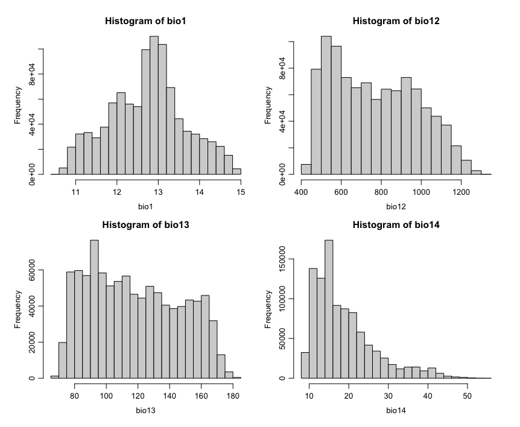
Figure 3.7: Visualization of histograms of covariates
For most raster operations, rasters should share the same CRS, resolution, and extent. If they do not, they typically need adjustment using functions such as project(), resample(), and crop() before combining.
3.4.2.3 Raster Visualization
Rasters can be quickly visualized using plot(). For multi-layer rasters, it is common to plot a subset of layers.
# Plot single-layer crops raster mask
plot(crops, main="Cropland Mask")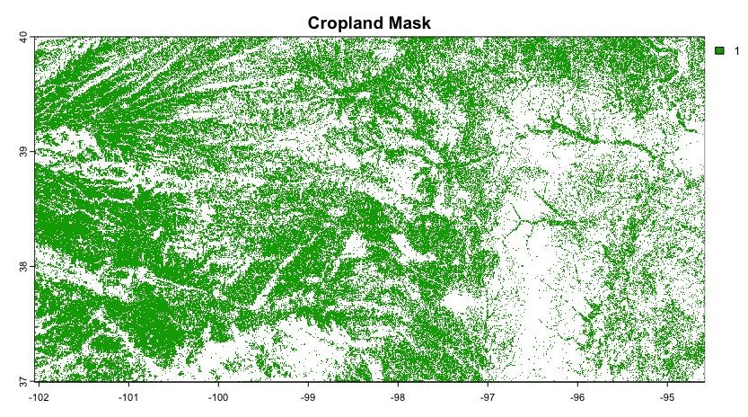
Figure 3.8: Visualization of raster crop mask
# Plot a multi-layer raster (e.g., environmental covariates stack)
plot(covs)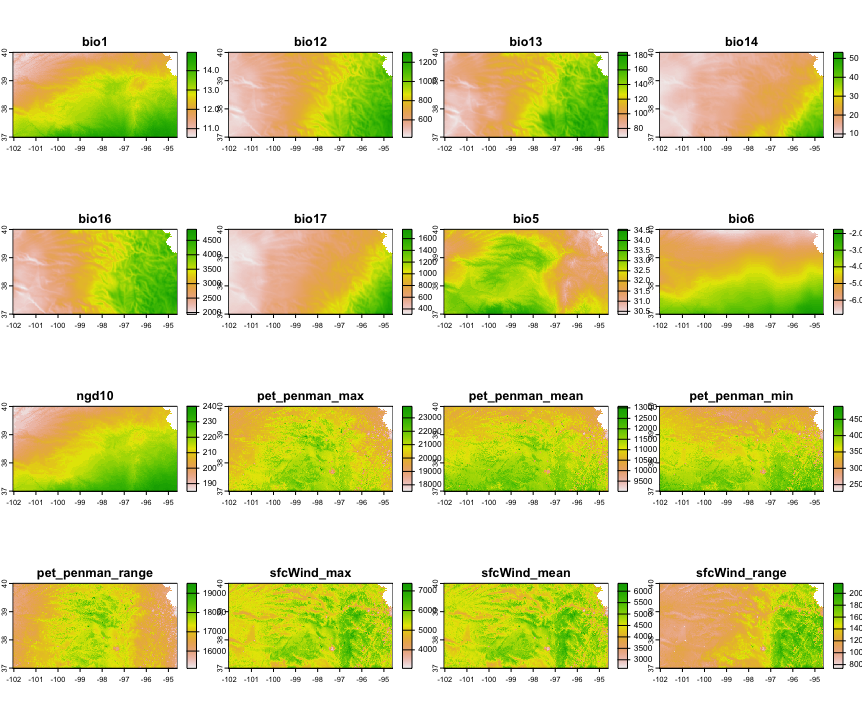
Figure 3.9: Visualization of covariates
You can also plot specific layers by name:
# Plot Elevation and Temperature from the covs stack
# Adjust graphics settings to 1 row x 2 columns layout with tight margins
op <- par(
mfrow = c(1, 2),
mar = c(0.5, 0.5, 0.5, 0.5),
xaxs = "i", yaxs = "i"
)
plot(covs[["dtm_elevation_250m"]], main = "Elevation (DEM)", cex.main = .8)
plot(covs[["bio1"]], main = "Annual Mean Temperature", cex.main = .8)
par(op) # restore previous graphics settings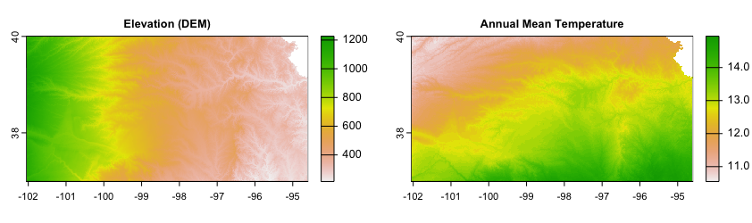
Figure 3.10: Visualization of Elevation and Temperature
3.4.2.4 Setting and Reprojecting CRS for Raster Data
Rasters also have a CRS. You can inspect it with crs(). To reproject a raster to a new CRS, use project(). Reprojection may change the grid and requires interpolation (resampling), so it is more computationally intensive than vector reprojection.
# Inspect CRS
crs(covs)
# Reproject raster (example: to EPSG:3857)
covs_3857 <- project(covs, "EPSG:3857")3.4.2.5 Spatial Operations on Rasters
Raster operations are used to prepare consistent covariate stacks, restrict layers to a study area, and combine tiled outputs.
3.4.2.5.1 Merge rasters (mosaic)
Adjacent raster tiles can be merged into a single, continuous layer using mosaic(). This is common when rasters are exported as tiles (e.g., from Google Earth Engine). In the example below, two binary cropland mask tiles are mosaicked and written as a compact GeoTIFF.
# Read input rasters (adjacent tiles)
r1 <- rast(paste0(rasters_dir,"Cropland_Mask_KANSAS-0000000000-0000000000.tif"))
r2 <- rast(paste0(rasters_dir,"Cropland_Mask_KANSAS-0000000000-0000023296.tif"))
# Mosaic into a single raster
m <- mosaic(r1, r2, fun = "max")
# Cast to integer to optimize file size (not valid for non-integer continuous data)
m <- as.int(m)
# Write output with compression to reduce file size
writeRaster(m,"03_outputs/module1/Cropland_Mask_KANSAS.tif", overwrite = TRUE,
wopt = list(datatype = "INT1U", # Byte (0–255); NA retained as NoData
gdal = c("COMPRESS=DEFLATE", "PREDICTOR=2", "ZLEVEL=9", "TILED=YES")
)
)3.4.2.5.2 Crop and mask to study area (crop(), mask())
Use crop() to reduce the raster extent, and mask() to set values outside the boundary to NA.
# Crop and mask covariates to the extent of Riley
# Align CRS of both datasets
admin <- st_transform(admin, crs(covs))
# Crop covariates to the extent of the county
covs_crop <- crop(covs, admin[admin$NAME=="Riley",])
# Mask covariates
covs_mask <- mask(covs_crop, admin[admin$NAME=="Riley",])
# Plot covariate (bio1 = temperature) in Riley County
# Adjust graphics settings to 1 row x 2 columns layout with tight margins
op <- par(
mfrow = c(1, 2),
mar = c(0.5, 0.5, 0.5, 0.5),
xaxs = "i", yaxs = "i"
)
plot(covs_crop[["bio1"]], main= "Crop", cex.main = 1)
plot(covs_mask[["bio1"]], main= "Mask", cex.main = 1)
# restore previous graphics settings
par(op) 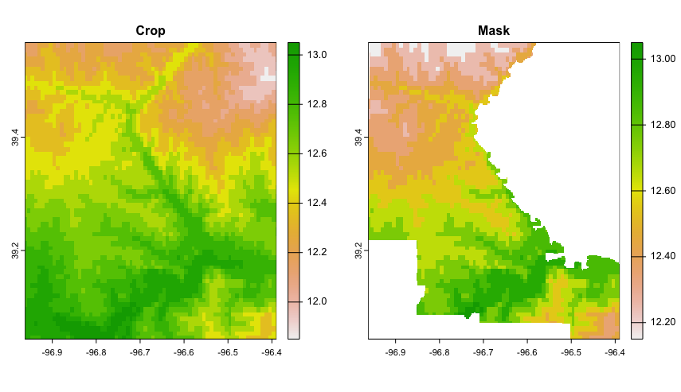
Figure 3.11: Differences of Crop and Mask outputs in raster data
crop() and mask() are complementary operations.
crop()reduces a raster to the extent of a vector polygon (it keeps all cells within the polygon’s bounding box), whilemask()retains only the cells inside the polygon and sets values outside toNA.If you want to limit a raster to a specific boundary and keep only the data within that area, first apply
crop()and thenmask().
3.4.2.5.3 Resampling and alignment (resample())
When combining rasters, they often need to be aligned to a common grid (same origin, resolution, and extent). The function resample() transfers values from one SpatRaster to the grid of another.
A key argument is method, which controls how new cell values are computed. Use method = "near" (nearest neighbour) for categorical/class rasters (e.g., land cover, masks) to avoid creating artificial mixed classes. Use method = "bilinear" (the default for numeric rasters) for continuous variables (e.g., temperature, elevation), where interpolation is appropriate.
# Align raster of crops to the grid of covariates
crops_aligned <- resample(crops, covs, method = "near")
# Spatial properties of aligned crops and covariates are equal
ext(crops_aligned)
ext(covs)
res(covs)
res(crops_aligned)Other methods (e.g., “cubic”, “cubicspline”, “lanczos”) can produce smoother results for continuous surfaces, while summary methods such as “sum”, “min”, or “average” are useful when aggregating values from multiple input cells into larger output cells.
3.4.2.5.4 Combine and remove rasters in a raster stack
Rasters with the same grid definition (same CRS, origin, resolution, and extent) can be combined into a single multi-layer SpatRaster (a ‘stack’). This is useful for building covariate stacks for raster operations in Digital Soil Mapping.
# Set a clear layer name for the aligned cropland mask
names(crops_aligned) <- "crops"
# Add the cropland layer to the covariate stack
covs <- c(covs,crops_aligned)
# Check layer names
names(covs)Layers can also be removed from the stack by subsetting the layers you want to keep.
# Remove "crops" from the stack
covs <- covs[[names(covs) != "crops"]]
# Check layer names
names(covs)3.4.2.5.5 Raster Algebra
Raster algebra creates raster layers by applying cell by cell mathematical or logical operations on existing rasters. It is used to derive new raster products such as indices, threshold-based masks, or reclassified maps. Rasters must have the same definition (CRS, origin, resolution, and extent).
# Example: classify a continuous covariate into two classes
high_temperature <- covs[[1]] > 12
# Adjust graphics settings to 1 row x 2 columns layout with tight margins
op <- par(
mfrow = c(1, 2),
mar = c(0.5, 0.5, 0.5, 0.5),
xaxs = "i", yaxs = "i"
)
plot(covs[["bio1"]], main= "Annual Mean Temperature", cex.main = .8)
plot(high_temperature, main= "High Temperature (>12ºC)", cex.main = .8)
par(op) # restore previous graphics settings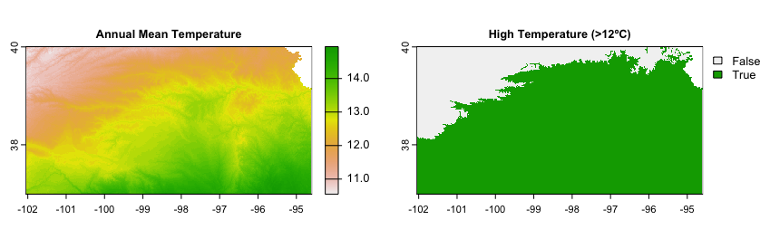
Figure 3.12: Reclassification of raster values with map algebra
3.4.2.5.6 Combining environmental (Raster) and soil (Vector) information
In Digital Soil Mapping, the calibration of statistical model need to link the analytical properties of soils with the environmental covariates. This is done by their overlapping position. To link soil observations (points) with environmental covariates (rasters), extract raster values at sample locations using extract().
# Extract covariate values at point locations (soils_sf)
cov_values <- extract(covs, soil_sf)The new object cov_values is a data frame which does not have the original data of the sf object soil_sf. A simple column bind command (cbind) can be used bind covariates to soil_sf, which remains an sf object keeping geometry (coordinates) and all original columns, plus the covariate columns.
# cov_values includes an ID column in the first column
soil_sf <- cbind(soil_sf, cov_values[ , -1, drop = FALSE])This dataset contains all the information to be used in further analyses of Sampling Design and calibration of Digital Soil Mapping models.
3.4.3 Calculation of Soil–Climate Rasters (Newhall Simulation Model)
The Newhall Simulation Model (NSM) is a water-balance–based model originally developed to estimate soil moisture and soil temperature regimes from climate and site characteristics. It simulates the seasonal dynamics of soil water storage and temperature using monthly climate inputs and simple soil physical assumptions. The resulting regime classes (e.g., ustic, udic, xeric; and temperature regimes such as mesic or thermic) are widely used in soil survey and soil classification contexts, and they are also useful as environmental descriptors in DSM workflows.
The Newhall Simulation Model requires several raster layers as inputs:
Monthly precipitation (pJan … pDec): drives water inputs into the soil water balance.
Monthly temperature (tJan … tDec): controls evapotranspiration demand and soil temperature dynamics.
In addition to monthly precipitation and temperature, the Newhall Simulation Model also requires site descriptors that influence soil water balance and seasonality:
Elevation (DEM): to account for altitude-related effects on temperature (and therefore evapotranspiration and soil temperature patterns).
Available Water Capacity (AWC): to represent, in mm, how much water the soil can store (typically for a reference depth, e.g., 0–200 cm), which controls how quickly soils dry after rainfall.
Longitude and latitude: to provide each grid cell’s geographic position, supporting calculations that depend on seasonal timing and and solar geometry (e.g., daylength patterns and the timing of solstices used in some Newhall metrics such as ‘days after summer solstice’ or ‘after winter solstice’).
This workflow processes monthly temperature and precipitation data from large time series (1981–2023), computes long-term monthly averages, and prepares all the above described rasters in a stack to run the Newhall soil–climate model (via {jNSMR}). The output includes soil-climate diagnostics and regime classifications (e.g., temperature and moisture regimes), which can be used as covariates in Sampling Design and Digital Soil Mapping.
3.4.3.1 Environment setup
The first step is to prepare the Environment setup (loading packages, define path to data files, and set the CRS).
# Packages
library(terra)
library(sf)
library(dplyr)
library(jNSMR)
# Target CRS for the workflow (use a projected CRS for analysis)
epsg <- "EPSG:3857" # Web Mercator (meters). Replace if needed.
agg.factor <- 1 # Optional aggregation to speed up Newhall calculations (1 = no aggregation)3.4.3.2 Prepare monthly average rasters of climatic data
TerraClimate files contains large time series (1981-2020) of climatic records. Monthly temperature and precipitation averages from these series must be calculated as independent raster files. Temperature in this dataset if scaled (e.g., ×10) to avoid decimal point data and save storage space this it has to be adjusted to real values. The following chunk computes the averages for every month across all years, producing a 12-layer raster stack of monthly averages.
# Monthly temperature time series (multi-year, monthly layers)
tmp <- rast(paste0(rasters_dir,"TerraClimate_AvgTemp_1981_2023_KANSAS.tif"))
# Number of years in the stack (assuming complete years)
nyears <- nlyr(tmp) / 12
# Monthly means across all years
temp_list <- vector("list", 12)
tmp_ref <- tmp[[1]] # reference layer for initializing
for(i in 1:12){
var_sum <- tmp_ref * 0
k <- i
for(j in 1:nyears){
var_sum <- var_sum + tmp[[k]]
k <- k + 12
}
temp_list[[i]] <- var_sum / nyears
}
# Convert to stack
Temp_Stack <- rast(temp_list) * 0.1 # convert scaled values to °C (×0.1)
# Write to disk
writeRaster(Temp_Stack, "03_outputs/module1/Temp_Stack_monthlyMean.tif", overwrite = TRUE)
# Monthly precipitation time series (multi-year, monthly layers)
prec_mm <- rast(paste0(rasters_dir,"TerraClimate_Precip_1981_2023_KANSAS.tif"))
# Number of years in the stack (assuming complete years
nyears <- nlyr(prec_mm) / 12
# Monthly means across all years
prec_list <- vector("list", 12)
pre_ref <- prec_mm[[1]] # reference layer for initializing
for(i in 1:12){
var_sum <- pre_ref * 0
k <- i
for(j in 1:nyears){
var_sum <- var_sum + prec_mm[[k]]
k <- k + 12
}
prec_list[[i]] <- var_sum / nyears
}
# Convert to stack
Prec_Stack <- rast(prec_list)
# Write to disk
writeRaster(Prec_Stack, "03_outputs/module1/Prec_Stack_monthlyMean.tif", overwrite = TRUE)3.4.3.3 Prepare monthly average stack of climatic data
NSM expects monthly precipitation and temperature layers with specific, predefined layer names.
# Load outputs (reuse objects from above)
Prec_Stack <- rast("03_outputs/module1/Prec_Stack_monthlyMean.tif")
Temp_Stack <- rast("03_outputs/module1/Temp_Stack_monthlyMean.tif")
names(Prec_Stack) <- c("pJan","pFeb","pMar","pApr","pMay","pJun","pJul","pAug","pSep","pOct","pNov","pDec")
names(Temp_Stack) <- c("tJan","tFeb","tMar","tApr","tMay","tJun","tJul","tAug","tSep","tOct","tNov","tDec")
combined_stack <- c(Prec_Stack, Temp_Stack)
writeRaster(combined_stack, "03_outputs/module1/climate_vars.tif", overwrite = TRUE)3.4.3.4 Prepare site descriptors that influence soil water balance and seasonality
In addition to monthly precipitation and temperature, NSM uses a number of site descriptors influencing soil climate:
Elevation (DEM).
Available Water Capacity (AWC).
Longitude and latitude.
These raster layers are obtained from different sources thus their geometry have to be harmonized to create a unique raster stack for the calculations.
# DEM
# Read raster
elev <- rast(paste0(rasters_dir,"DEM_KANSAS.tif"))
# Align CRS to the common EPSG
if(crs(elev) != epsg) elev <- project(elev, epsg, method = "near")
# AWC (0–200 cm, in mm)
# Read raster
awc <- rast(paste0(rasters_dir,"awc_KANSAS.tif"))
# Align CRS to the common EPSG
if(crs(awc) != epsg) awc <- project(awc, epsg, method = "near")
# Align geometries with the DEM raster
awc <- resample(awc, elev)
# Define name
names(awc) <- "awc"
# Temperature and Precipitation
# Read climate stack
newhall <- rast("03_outputs/module1/climate_vars.tif")
# Align CRS to the common EPSG
if(crs(newhall) != epsg) newhall <- project(newhall, epsg, method = "near")
# Align geometries with the DEM raster
newhall <- resample(newhall, elev)
# Longitude and Latitude
# calculate lon/lat from the climate stack
newhall$lonDD <- init(newhall[[1]], "x")
newhall$latDD <- init(newhall[[1]], "y")
# Mask climate stack to DEM valid area and add DEM/AWC to the stack
newhall <- mask(newhall, elev)
newhall$awc <- awc
newhall$elev <- elev
# Save full NSM input stack
writeRaster(newhall, "03_outputs/module1/climate_newhall_vars.tif", overwrite = TRUE)3.4.3.5 Calculate NSM outputs
Depending on resolution and extent, the calculation of the NSM can take hours. To reduce runtime you may aggregate the input stack (optional), then run newhall_batch() with multiple cores.
# Read the full Newhall input stack
newhall <- rast("03_outputs/module1/cclimate_newhall_vars.tif")
# Optional: aggregate to speed up (e.g., fact = 2, 3, ...)
# newhall <- aggregate(newhall, fact = agg.factor)
system.time({
newhall_results <- jNSMR::newhall_batch(newhall, cores = 4)
})3.4.3.6 Inspect and export results (compact outputs)
# Simple validity mask
mask_valid <- newhall_results$annualRainfall * 0 + 1
# Apply mask and export
results <- mask(newhall_results, mask_valid)
writeRaster(results, "03_outputs/module1/newhall.tif", overwrite = TRUE)
# Optional compact integer exports (×10 preserves 1 decimal place)
results_climate_int <- app(newhall, function(x) as.integer(x * 10))
writeRaster(results_climate_int, "03_outputs/module1/climate_intx10.tif", overwrite = TRUE)
results_newhall_int <- app(results, function(x) as.integer(x * 10))
writeRaster(results_newhall_int, "03_outputs/module1/newhall_intx10.tif", overwrite = TRUE)The raster stack newhall_results contains the NSM outputs that can be used as covariates in both the Sampling Design and Digital Soil Mapping workflows.